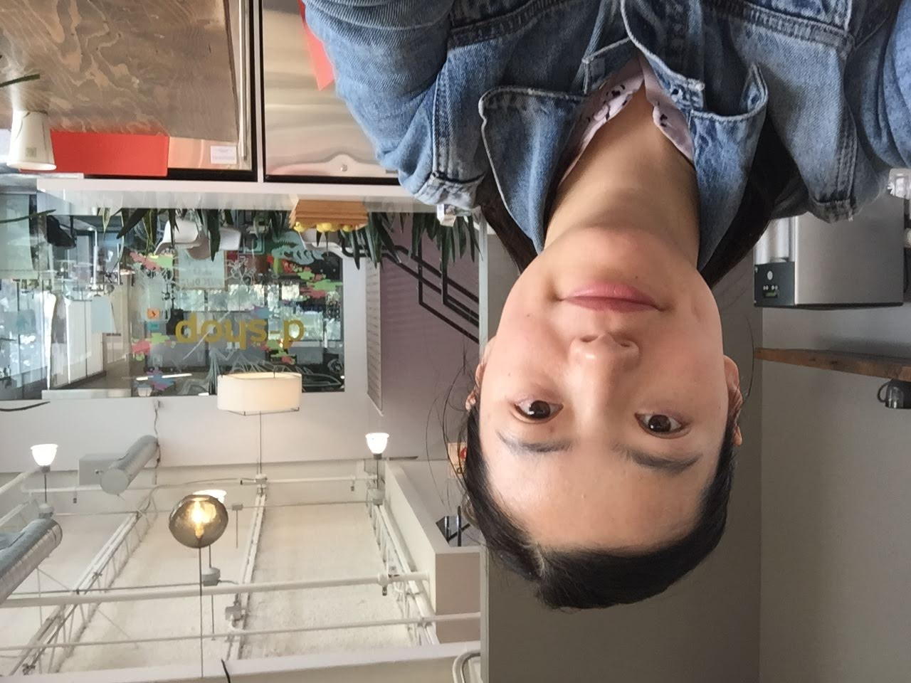

I came to the United States in 2010 carrying two things: uncertainty about where I'd land, and a deep instinct that good design was about understanding people first, systems second.
Arrived in the US and honed my craft through graduate school projects at San Jose State University and an 8-month internship at Lam Research — building the foundation of visual, interaction, and research skills that would carry me forward.
Joined Cloudwiz as the founding designer and built an Application Performance Monitoring platform from scratch — no design system, no research backlog, no team. Just the problem space and the users inside it. Over three years, I learned that the best design decisions come from understanding the whole system well enough to know which lever to pull.
That systems orientation carried me through five years at Harness and ServiceNow, designing for enterprise workflows where the stakes were high and the complexity was real — working on agentic AI features, partner experience platforms, and growth surfaces.
Pivoting fully into AI agent design, bringing a decade of enterprise UX experience to the hardest design problems in the agentic era.
At Harness and ServiceNow, I kept noticing the same gap: the design field was treating AI agents like smarter UI components, when they're actually a fundamentally new kind of collaborator.
That realization became a direction. I'm now focused on AI agent design — not as a feature layer on top of existing products, but as its own discipline.
How does an agent build trust over time? What does it mean to design for a system that can act, fail, and recover without a human in the loop? How do you make an agent's reasoning legible without making it exhausting?
These are the questions I'm working through — including in my Lead Intelligence Agent project, where I designed a full behavior system: trust states, orchestration modes, and an evaluation framework for an AI sales qualification agent.
I'm looking for teams building AI-native products where agent design is central, or established companies reimagining their workflows around intelligent systems.
If that's you, I'd like to talk.
annefeng68+job@gmail.comMy assumptions about the future of work and agent OS
I believe AI will split professionals into two identities: a human self that thinks, observes, and builds relationships — and a digital self that executes on their behalf.
Eventually, agents will be sold as standardized "agent operating systems" — pre-equipped with the domain mechanics of a given profession. A sales agent OS handles outreach and qualification. A design agent OS drafts, iterates, and delivers. Capable, but generic.
What no agent OS ships with is the human's particular way of seeing. The judgment, the instinct, the close attention that turns technically correct output into something people genuinely trust.
In an agent-native world, the competitive edge won't be which OS you're running — it'll be the quality of the human behind it.
That's the design space I work in: the interface between human judgment and agent execution, where the most important UX problem isn't how autonomous the agent can become, but how well it translates a person's unique perspective into work that earns lasting trust.
My approach rests on three principles — but what I've learned over the years is that these aren't just values. They're a system.
Understanding users deeply enough to know what they actually need — not just what they ask for. Empathy without structure produces research that goes nowhere.
Designing products people genuinely want to interact with. Engagement without purpose produces interfaces that entertain but don't serve.
Giving users the tools and confidence to achieve their goals. Empowerment without trust produces tools people route around.
The work that matters connects all three — and holds them together even when the technology underneath is changing fast. In the context of AI agent design, this means building systems that feel as trustworthy as they are capable.